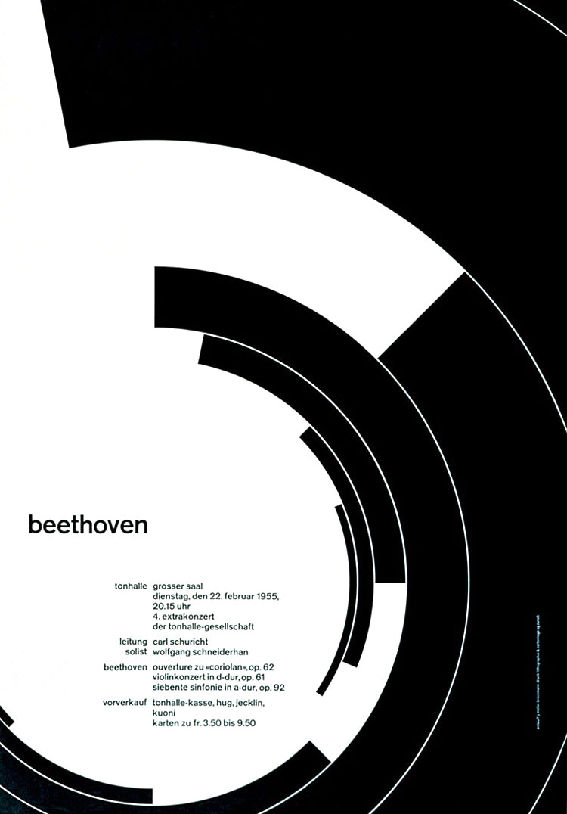

As with most graphic designers that can be classified as part of the Swiss International Style, Joseph Müller-Brockmann was influenced by the ideas of several different design and art movements including Constructivism, De Stijl, Suprematism and the Bauhaus. He is perhaps the most well-known Swiss designer and his name is probably the most easily recognized when talking about the period. He was born and raised in Switzerland and by the age of 43 he became a teacher at the Zurich school of arts and crafts.
